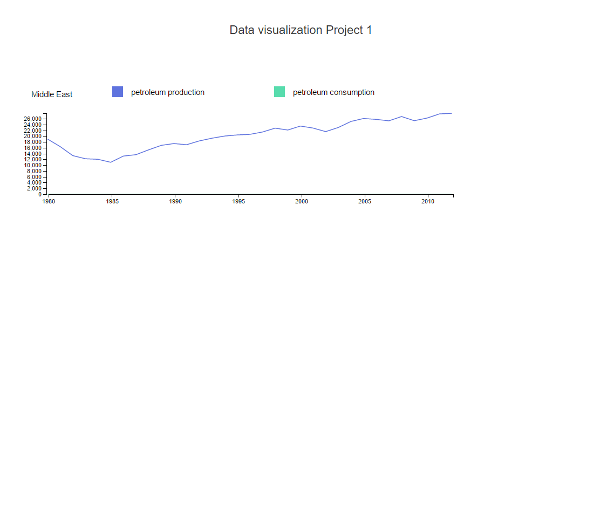
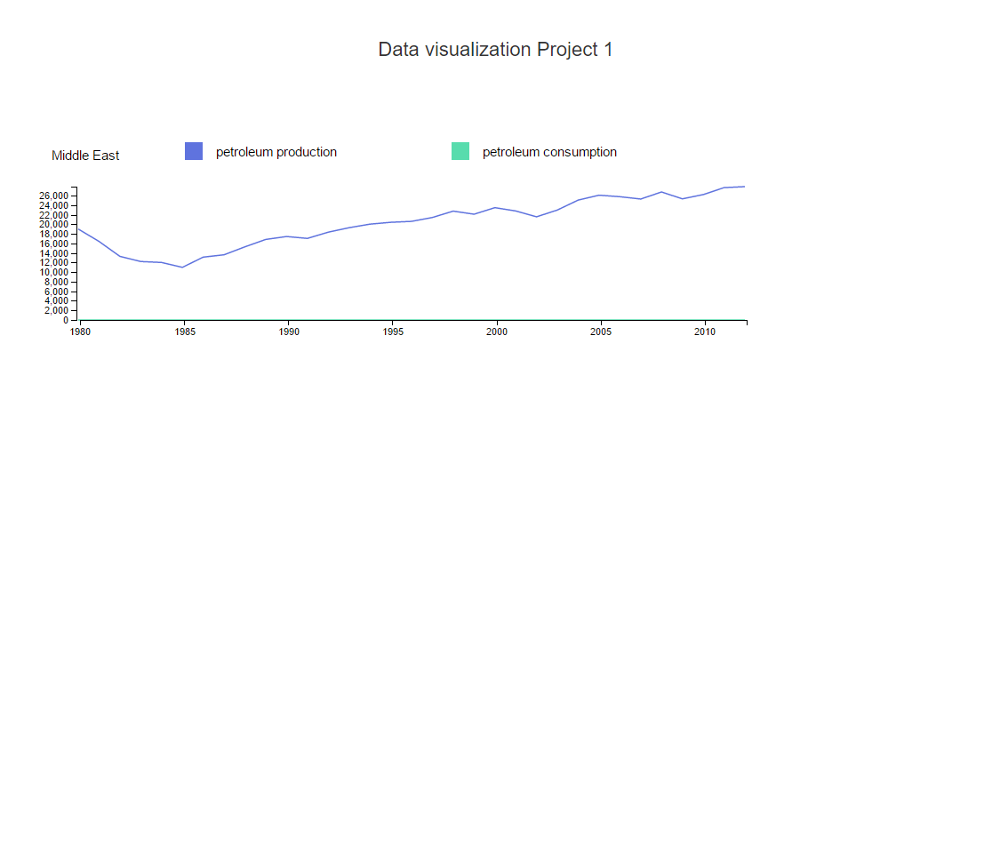
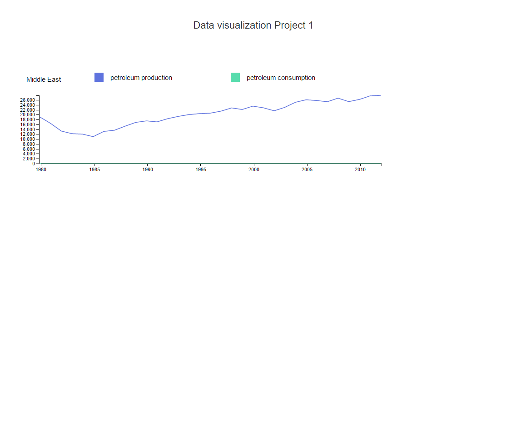

I started of with analysing the design code and understanding the parser.
On sucessfully parsing the all the files I started to create a data structure that will store all values.
The data structure was created with keeping bar charts in mind but not scatter plots which was a mistake since it increased the efforts for making a scatterplot.
As per the rubric the bar chart control was created to take input for 2 variables for n number of countries. I decided to create a separate bar chart for each country since it will be easier to compare 2 variables for one country on one chart.
This layout was also implemented with line chart. For the scatterplot I made a different data structure and decided to show values for a certain year for all the countries for a given set of variables.
A lot of the decisions earlier in the process were changed like the country drop down was replaced with a checkbox to make it easier to select multiple countries at once.
Design Choices
Number of charts on 1 page : During the first iteration I displayed 6 graphs on one page. I reduced the number to 3 to improve visibility of the charts since it gets really crowded when viewving 2 variables for multiple countries
Color for variables : The colors used for representing the variables have a similar saturation and change in hue and lightness. The colors were tested for color blind accessibility and the colors were distinguishable. Since it was used to represent 2 differnet variables the hue was changed
3rd variable in scatter plot : In the first iteration the 3rd variable decided the radius of the circle. This caused an issue when the data was huge and the circles became large enough that their realtionship was not visible. Hence the 3rd variable now decides the color. This method makes the outliers clearly visible but average data is not clearly distinguishable
Findings
co2 emissions per capita
The color in scatterplot indicates the 3rd variable. I used co2 emission as the 3rd variable and as seen in the image few countires stood out. On further analysing their data in bar charts we can see that these countries either a very low co2 emission or a very high population which makes the co2 emission per captia a low value.
Outliers in Scatterplot

When we plot production against consumption all dots that lie along the diagonal have similar production and consumption values. Any country that lies away from the diagonal can be said to be a exporter/importer.
Example : As seen in the image middle east lies in the top left corner on y axis which represents petroleum production. This means its producing more than its consuming. In the line chart we can see it produces so much petroleum that consumption is negligible and hence not see in graph(consumpton line is equal to x axis). This explains why it lies so far from the diagonal axis in scatterplot.
 The color in scatterplot indicates the 3rd variable. I used co2 emission as the 3rd variable and as seen in the image few countires stood out. On further analysing their data in bar charts we can see that these countries either a very low co2 emission or a very high population which makes the co2 emission per captia a low value.
The color in scatterplot indicates the 3rd variable. I used co2 emission as the 3rd variable and as seen in the image few countires stood out. On further analysing their data in bar charts we can see that these countries either a very low co2 emission or a very high population which makes the co2 emission per captia a low value.
 
When we plot production against consumption all dots that lie along the diagonal have similar production and consumption values. Any country that lies away from the diagonal can be said to be a exporter/importer.
Example : As seen in the image middle east lies in the top left corner on y axis which represents petroleum production. This means its producing more than its consuming. In the line chart we can see it produces so much petroleum that consumption is negligible and hence not see in graph(consumpton line is equal to x axis). This explains why it lies so far from the diagonal axis in scatterplot.

When we plot production against consumption all dots that lie along the diagonal have similar production and consumption values. Any country that lies away from the diagonal can be said to be a exporter/importer.
Example : As seen in the image middle east lies in the top left corner on y axis which represents petroleum production. This means its producing more than its consuming. In the line chart we can see it produces so much petroleum that consumption is negligible and hence not see in graph(consumpton line is equal to x axis). This explains why it lies so far from the diagonal axis in scatterplot.